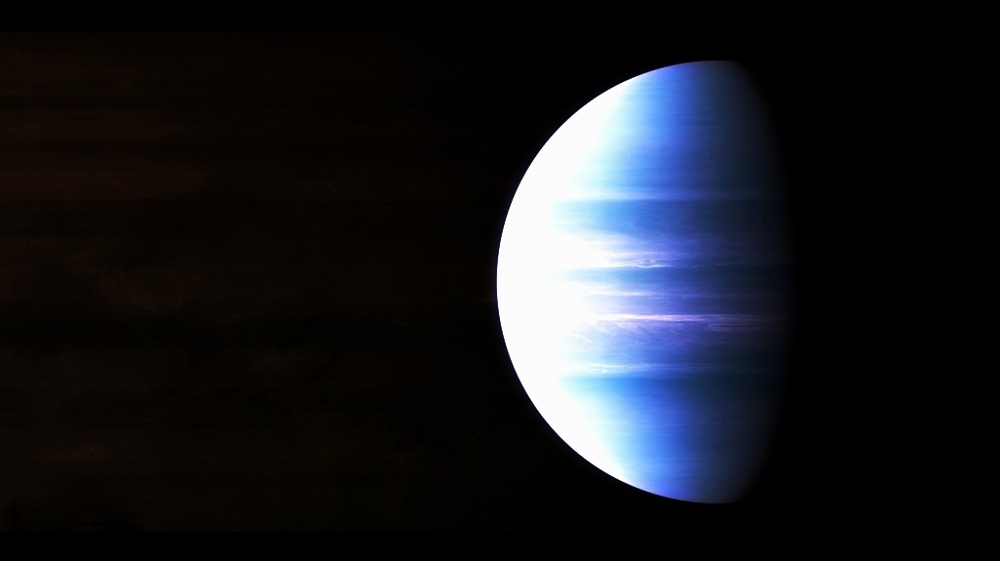

Не так далеко от Земли (всего 63 световых года, подумаешь) расположена планета под названием HD 189733 b. Это мы все равно не запомним,
поэтому сразу к делу — чем она так необычна? Ответ простой: там идет дождь, причем почти постоянно.
Вот только это не обычный тропический ливень или ураган, на планету падают осадки в виде стекла. Все дело в том,
что атмосфера насыщена диоксидом кремния, и, когда идет «дождь», условные капли расплавляются при падении и затвердевают.
Но дождь — это только половина дела. На планете бушует сильный ветер, скорость которого доходит до 9 000 км/час.
Это в 10 раз быстрее скорости полета реактивного пассажирского самолета.
Так что, похоже, у нас в списке еще одна адская планета — попасть в такой ураган никому не пожелаешь.
